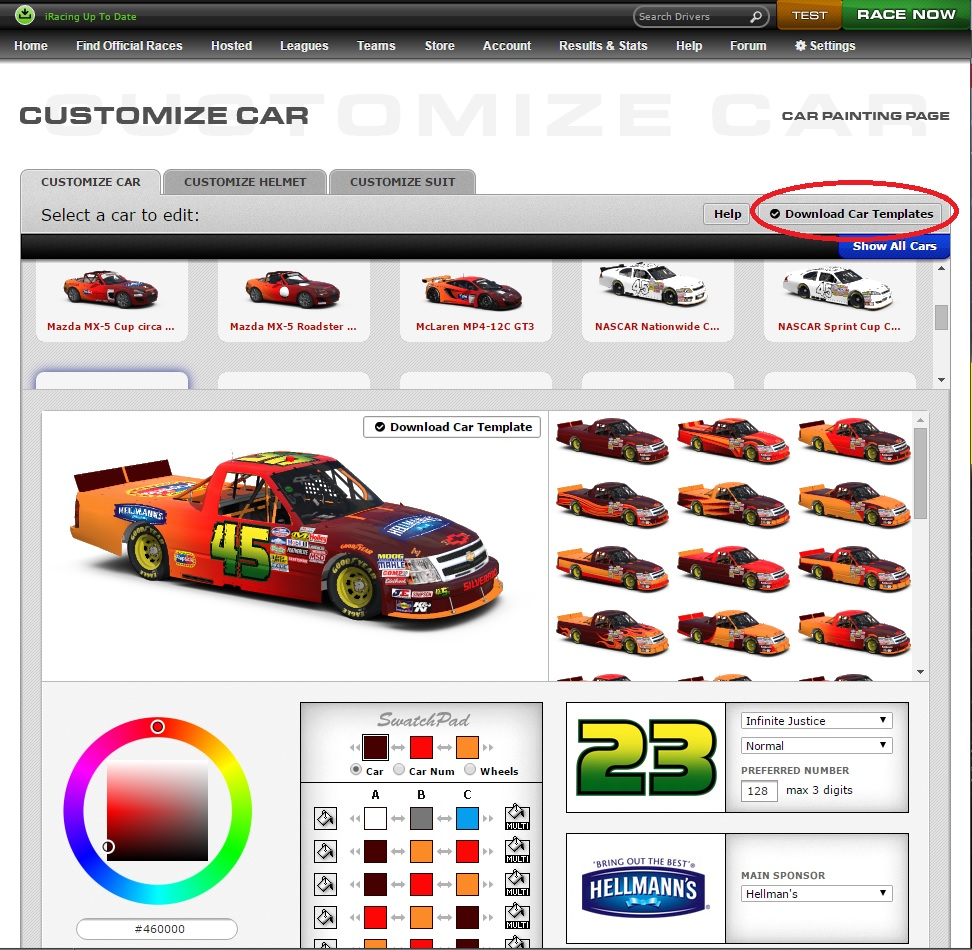
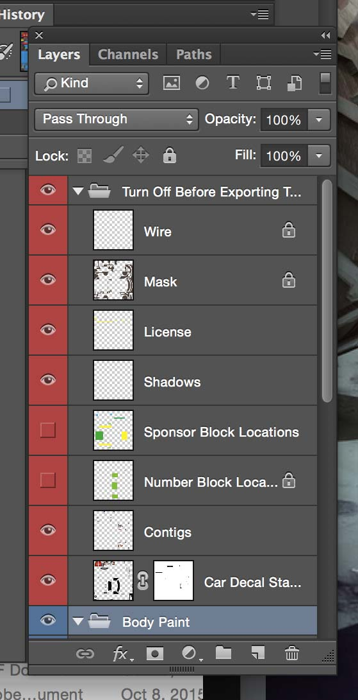
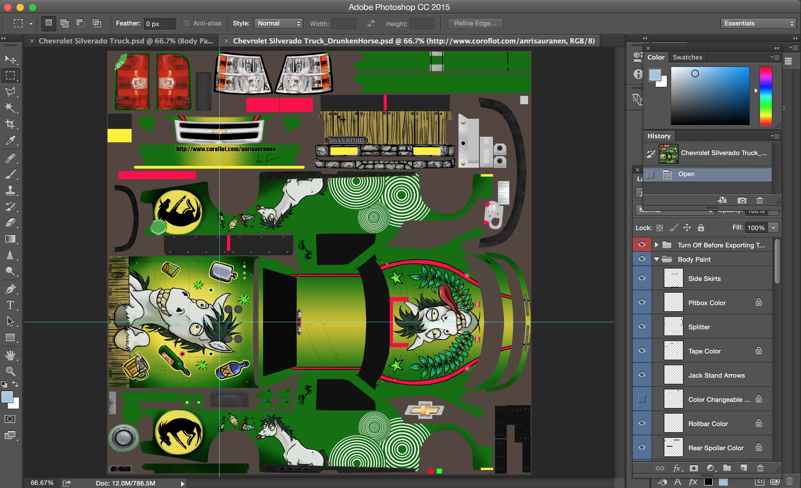
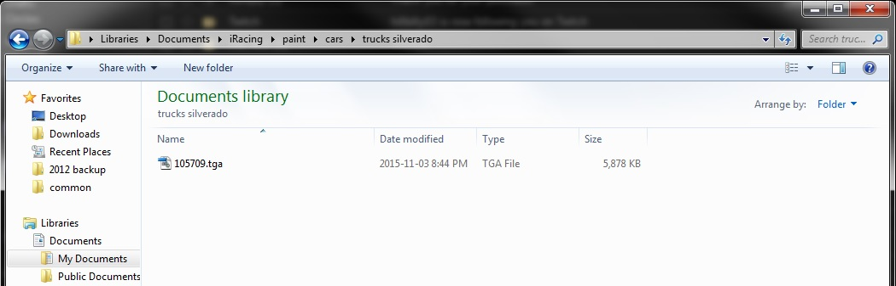
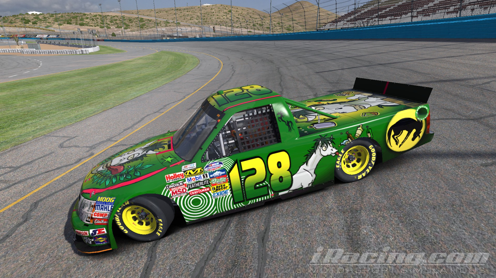

iRacing allows a considerable amount of customization in terms of your personal livery, but there comes a time when you might want to really express yourself far beyond the basic paint schemes the simulation allows. Fortunately, this is not only possible in iRacing, but not too difficult either. Ideally, this tutorial will make the process easy.
Please note that this tutorial presumes that you have Photoshop already installed. GIMP will likely work as well.
Daniel Cormier, a first-year student in Algonquin College's Mobile Apps Development and Design programme, has a taste for simulated automotive racing to the point where he has constructed his own cockpit and digital instrument cluster. This is a bit beyond a hobby.
Firstly, you'll need your customer ID. This is easy to retrieve: in the iRacing main menu, select "Account" and then "My Account". In the upper right hand corner will be your customer ID, a six-digit figure. Note this down, as we need this later.
Secondly, we need to get the template file for the car itself. iRacing helpfully provides these in Photoshop format.
Select "Account", then "Customize Paint Schemes", and then the vehicle you wish to edit. In this menu, you could pick one of the predefined styles and assign corporate sponsorship. It's worth it to do this anyway, as this serves as a default for those who aren't subscribed to a custom livery service. Additionally, this is where you could choose a font and colour for your racing numbers. In this case, I've selected the Camping World 2011 Chevy Silverado, and my font is a yellow-to-green gradient.
The templates come with a lot of useful information to help make sharper graphics. There is the red layer which shows the location of predefined graphics the simulation will apply to your vehicle, and the blue layers are free to be worked on.
Some useful detail: The "wire" layer shows the polygons of the actual vehicle, which makes it easier to wrap graphical elements from the hood to the fenders, for instance.
Sponsor Blocks are where the sponsors you chose (Hellmans Mayonnaise and Popsicle, in my case) would go normally.
Contigs are the various little corporate sponsorship stickers. Unlike the sponsorship decals, these will be rendered atop your livery, no matter what.
Car Decal Stamps contains coarse details such as the headlamps and front fascia; Shadows contains fine details, such as the seams between body panels.
Finally, Number Block Location shows where the car's racing number will be placed. These numbers are assigned on a per-race basis and can not be changed, but the colour and font can be, in the previous step.
Now it's time to paint! There are a number of graphical items that show up in the blue layers of the template, some of which are easily missed. Typically in these templates, the rollbar colour is set as a little square somewhere in a remote corner of the file. It may not be the end of the world to miss it, but a painted rollbar can add to the style and it's often those little details that matter.
Ready to save your masterpiece? Save this file as "Targa" format, 24 bits, with RLE compression. And the filename? That will be your customer ID.
The location of the file is a bit misleading. In Windows, there will be an iRacing directory structure under the Documents tab. While your vehicle will be listed under "paint", it won't work; there's a "cars" subdirectory beneath that, with those vehicles listed again.
Make sure it looks good! Fire up the simulator, load a test track, and gaze upon your handiwork. It sometimes takes several tries to get it perfect. This particular example took around ten hours of work.
Now that it's done, you can send your targa file to your friends, who will save it as you have, or to custom livery exchange services, such as "Trading Paints". This service allows people you've never met to download your paintjob automatically! This can make races feel that much more personal, as you'll be able to identify your racing nemesis that much more readily--and they, of course, can see you coming more readily as well.